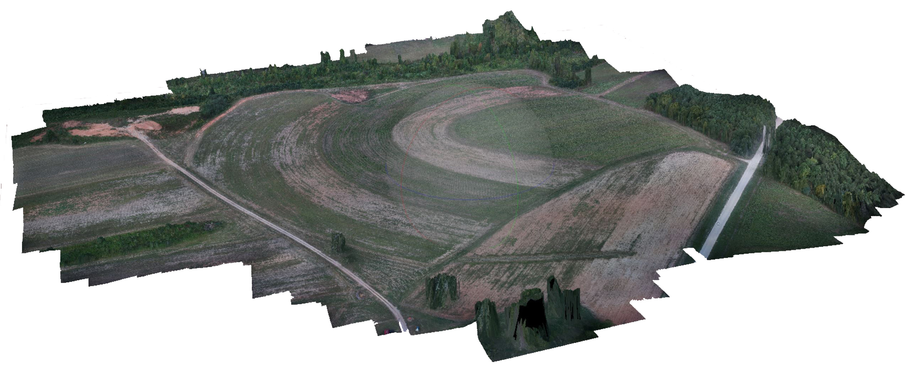

Methodology
I used Agisoft Photoscan to compute a digital surface model and orthophotograph for Mid Pines from the 06.20.2015 flight by the Trimble UX5. I mapped GCPs 5, 8, 9, and 10 with 3-5 projections.
Report
agisoft_report.pdfOrthophoto draped over DSM in Agisoft Photoscan
